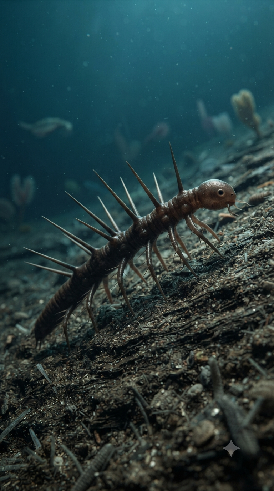
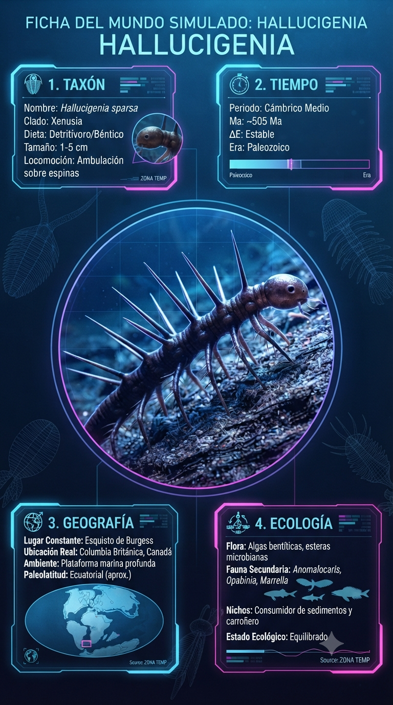
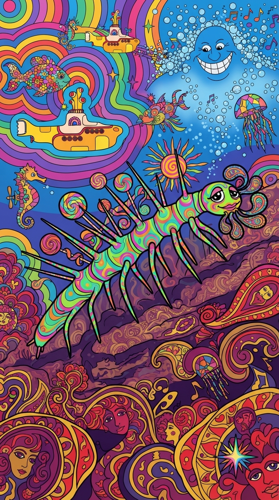

Paleoficha de Hallucigenia



Periodo: Cámbrico Medio (Burgess Shale)
Edad: Hace aproximadamente 505 millones de años.
Dieta: Detritívoro.
Distribución: Formación Burgess Shale, Columbia Británica (Canadá).
TAXÓN:
Hallucigenia sparsa
CLADO:
Lobopodia (Ecdysozoa / Stem-Panarthropoda)
DIETA:
Detritívoro y recolector de materia orgánica del fondo marino.
TAMAÑO:
Entre 1 y 5 centímetros de longitud.
LOCOMOCIÓN:
Bentónica, desplazándose mediante apéndices lobulados terminados en pequeñas garras.
TIEMPO:
Cámbrico Medio (Burgess Shale), hace aproximadamente 505 millones de años.
GEOGRAFÍA:
Formación Burgess Shale, Columbia Británica (Canadá).
EQUIVALENCIA PALEOGEOGRÁFICA:
Base del talud continental del antiguo continente Laurentia.
AMBIENTE PALEAOECOLÓGICO:
Fondos marinos profundos afectados ocasionalmente por corrientes de turbidez que favorecieron su extraordinaria conservación fósil.
ECOLOGÍA:
• Flora: Fitoplancton, cianobacterias y abundantes detritos orgánicos.
• Fauna secundaria: Anomalocaris, Wiwaxia, Marrella y numerosos organismos de cuerpo blando de Burgess Shale.
• Nicho: Habitante del lecho marino, adaptado a caminar sobre sedimentos blandos mediante sus patas lobuladas mientras las espinas dorsales actuaban como defensa pasiva.
• Relaciones: Presa potencial de radiodontos y otros depredadores cámbricos; constituye un representante clave de los primeros panartrópodos.
CLIMA:
Wm10 (Marino). Océanos cálidos, estables y bien oxigenados en las profundidades del talud continental.
ESTADO ECOLÓGICO:
Estable. Hallucigenia es uno de los organismos más emblemáticos de la explosión cámbrica y una pieza esencial para comprender el origen evolutivo de artrópodos, onicóforos y tardígrados.
Vídeo PalEntropía:
▶ Ver Short en YouTube